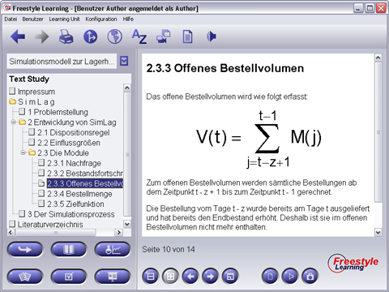

Die Text Study bietet eine Hypertext-basierte Sicht auf die Lerninhalte einer Unit. Grundlage sind dabei HTML-Dokumente. Diese View ist ein guter Einstiegspunkt zur Aneignung sowohl grundlegender als auch spezieller Kenntnisse über den Lerninhalt.
Bei Auswahl eines Elements aus der Baumansicht wird das zugehörige Hypertext-Dokument im Anzeigebereich dargestellt. Diese HTML-Dokumente können Text, Bilder, Tabellen, Links und eine Menge möglicher Formatierungen enthalten. Als Link-Ziele dienen sowohl Internet-Adressen als auch andere Freestyle Learning-Elemente. Anders als bei normalen Hyperlinks können für einen Link hier auch mehrere Ziele angegeben werden. Beim Anklicken eines Links mit mehreren Zielen erscheint ein Dialog, aus dem das gewünschte Ziel ausgewählt und aktiviert werden kann. Durch Drücken der "Zurück"-Schaltfläche in der Toolbar gelangt man leicht zurück zu dem Element, von wo aus man den Link aktiviert hat.

Das Interaction Panel beinhaltet die Standard-Interaktionsschaltflächen.
Hinweis: Die Text Study bietet Ihnen neben der herkömmlichen Druckfunktion zum Ausdrucken des aktuell aktivierten Elementes einen "Komplettdruck" zum Ausdrucken aller Elemente in Form eines einzigen Dokumentes, z. B. zur Erstellung eines vollständigen Skriptes über die Text Study-Inhalte.
Zurück zur Hauptseite